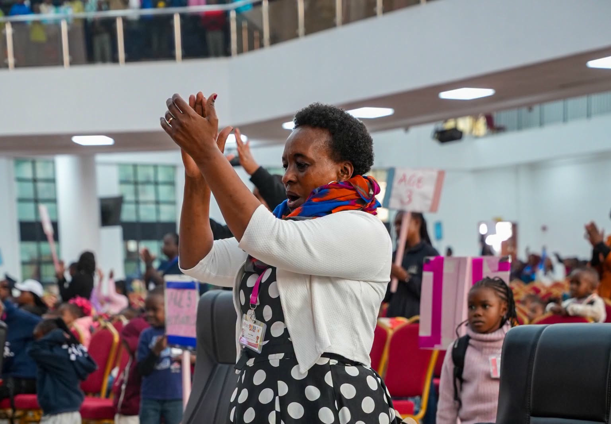
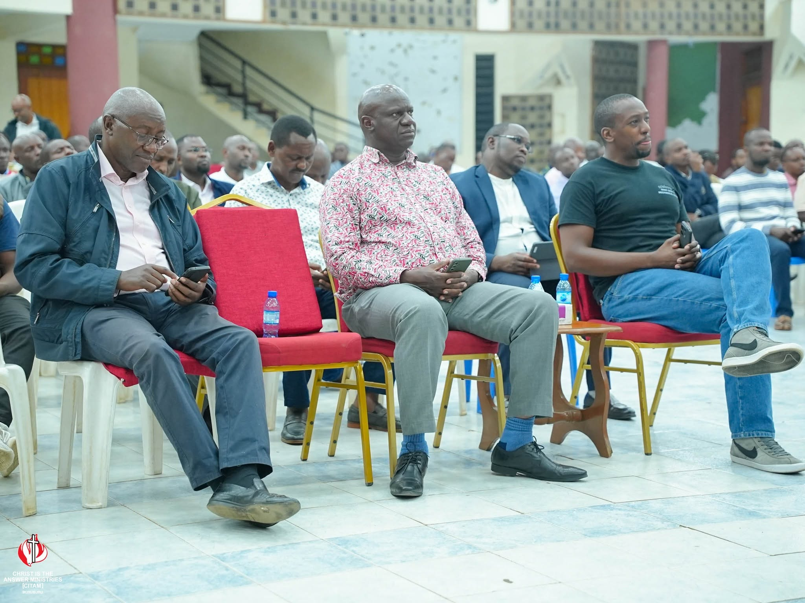
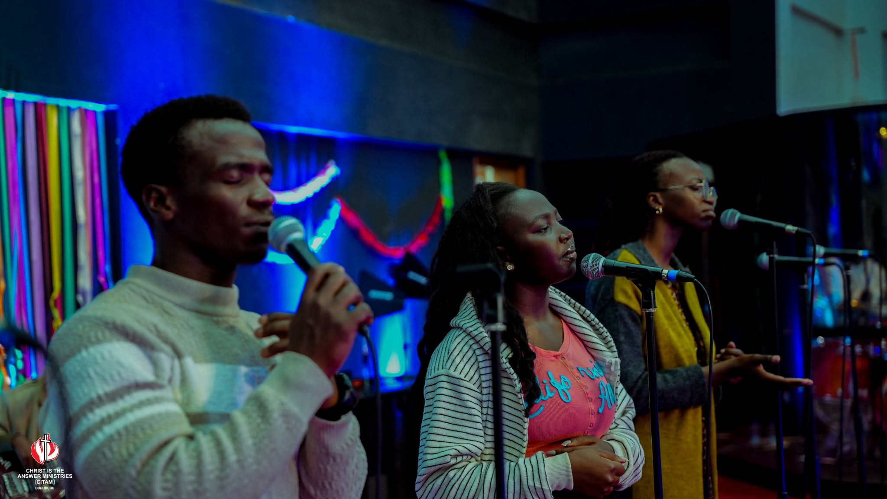

WELCOME TO CITAM BURUBURU
A welcoming church in Buruburu.
Welcome to CITAM Buruburu
CITAM Buruburu is a community following Jesus and serving our neighbourhood.
Everyone is welcome to join our church family.
Gather With Us This Week
Encounter God's word, worship, and fellowship in our weekly services.
Worship Gatherings
1st Service: 8:30 AM – 10:30 AM | 2nd Service: 11:30 AM – 1:30 PM. Family worship with praise, preaching, and communion.
Sunday Prayer & Intercession
Start your Sunday with a time of prayer and intercession.
Youth & Teens Services
Worship and Bible study for young people.
Wednesday Prayer Service
Midweek prayer and Bible study.
Monthly Kesha
Prayer with a difference.
Latest Sermons & Teachings
Messages to encourage, inspire, and strengthen your walk with God.
Loading featured sermon...
Find Your Place to Belong & Serve
Ministries for all ages to grow in faith.
Children's & NextGen Ministry
Children's classes, Bible stories, and friendly care.
EXPLORE NEXTGEN MINISTRY →


Meet Our Pastoral Team
Our pastoral team serving the congregation.
Rev. Ken Isige
Senior pastor providing spiritual leadership and care.
Rev. James Munyiri
How can we pray for you?
Our pastoral team will pray for your request. Share it confidentially.
Nziu Road, off Mumias Road, Buruburu, Nairobi, Kenya
npcburuburu@citam.org • P.O. Box 42254–00100, Nairobi